也紀念我們永遠的朋友 李士傑先生（Shih-Chieh Ilya Li）。
CentOS 基礎設定（中）
前言
在上一篇文章 CentOS 基礎設定（上） ，我們已經建立及設定好管理者用來遠端登入主機的一般使用者帳號，以及設定 CentOS 主機網路資訊，並測試能否與網際網路上主機連通。透過修改 SELinux 安全增強機制至寬容模式來了解 SELinux 的保護阻擋機制，以便為日後完全開啟 SELinux 安全增強機制鋪路。最後則是關掉預設的權限，不允許 root 管理者帳號遠端登入，以避免被網路上隨處可得的密碼暴力測試工具攻擊的機會
本文中將會先簡單介紹 CentOS Linux 的 7 種啟動模式等級 (RunLevel)，解說每個啟動模式等級所分別代表的意義。再來則是設定使用者登入系統後的操作介面 Shell 以及編輯器 VIM 的環境參數設定，以便幫助您在操作 CentOS 作業系統及編輯檔案時能更加得心應手。設定操作介面及編輯器後，則是探討當每台主機同時擁有多個管理者的情況時，該如何記錄每個管理者登入主機後的操作情況。我們將會透過設定 sudo 來限制及記錄管理者提升到管理權限 root 的使用狀況。最後則會設定 CentOS 作業系統的套件管理工具 YUM 將套件的下載來源指向到台灣本地鏡像網站，以便縮短相關軟體套件的下載時間。
實作環境
* CentOS 5.5 32bit (Kernel 2.6.18-194.el5)
* vim-7.0.237
* sudo-1.7.2p1-5.el5
* yum-3.2.22-26.el5.centos
RunLevel 啟動模式等級
談到 CentOS Linux 的 RunLevel 啟動模式等級，便要先了解一下整個 CentOS 開機過程。透過下列的開機流程說明，便會了解到在 RunLevel 啟動模式，為何能夠掌控系統後半段開機階段的相關服務啟動及關閉。下列開機流程是以安裝於 x86 硬體上的 CentOS 進行說明：
1. 硬體伺服器 BIOS (INT 13H / EFI) 開機時會檢查連接於系統上的主硬碟 MBR / GPT 來載入開機管理程式（例如 GRUB、LILO等）。
2. 初始階段開機管理程式會載入記憶體並從 /boot 掛載點內啟動下一階段開機管理程式，舉例來說，GRUB 開機管理程式便是載入 /boot/grub/grub.conf 設定檔內容中的 initrd-2.6.18-194.el5.img 映像檔。
3. 這個階段中會將系統核心，以及必需的系統模組載入至記憶體內並且掛載於 root 分割區，此時也同步釋放未使用到的記憶體。請注意此時 root 分割區為唯讀狀態。
4. 當核心載入完畢，執行完硬體偵測及相關驅動程式載入後，接著便會將開機過程的控制權轉交給系統第一隻執行程式 /sbin/init 來準備設定使用者環境。
5. /sbin/init 程式將透過 /etc/inittab 設定檔來為系統載入適當的 RunLevel 相關設定，例如網路設定、相關服務啟動等，並且將 /etc/fstab 設定檔內所條列的掛載點，一一掛載至檔案系統。相關服務啟動完成，檔案系統掛載完畢，至此系統開機完成。
RunLevel (SysV init) 啟動模式等級可以分為 7 種等級分別是 0 ~ 6，而這 7 個數字所分別代表的意義如下：
* 0 (halt)：系統關機，若您將 RunLevel 設為此模式，則會發現當開機程式完成後系統就直接關機。
* 1 (Single user mode)：單人模式，通常在系統發生問題需要維護時才會進入此一模式。
* 2 (Multiuser without NFS)：多人模式但沒有 NFS 網路功能，通常用於多人多工但不需要網路功能時，才會進入此模式。
* 3 (Full multiuser mode)：多人文字模式，此模式為不需要進入視窗模式，並且具備完整網路功能的管理者所使用的模式。
* 4 (unused)：尚未使用，使用者可以自行定義。
* 5 (X11)：多人圖形模式，此模式為習慣使用視窗模式，並且具備完整網路功能的管理者所使用的模式。
* 6 (reboot)：重新啟動，若您將 RunLevel 設為此模式則會發現當開機程式完成後，系統就直接重新啟動。
當您在安裝 CentOS 時若是由文字模式進行安裝過程，則系統預設使用的 RunLevel 便為 3。也就是文字模式 (Text mode)。若安裝過程選擇圖形模式進行安裝，則系統預設使用的 RunLevel 便為 5 也就是圖形模式 (GUI mode)。若您希望變更系統預設使用的 RunLevel 啟動模式等級，可以透過修改 “/etc/inittab” 設定檔內容來達成。下列操作步驟為將 RunLevel 3 修改為 RunLevel 5：
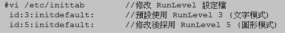
▲圖1 修改 RunLevel 設定檔
那要如何得知目前所在的 RunLevel 啟動模式等級中，哪些服務是啟用的，哪些是關閉的呢？並且又該如何啟用某個服務或關閉某個服務呢？要達成上述目的有三個指令可以達成分別是 chkconfig、ntsysv、system-config-services 詳細差異及說明如下：
* chkconfig：此指令可以條列出指定的服務在每個 RunLevel 中的啟用或關閉狀態，您可以使用指令來將服務在某個 RunLevel 進行啟用及關閉的狀態，或者搭配參數 on / off 來一次將該服務在 RunLevel 2 ~ 5 進行啟用及關閉的狀態。
* ntsysv：此指令會開啟互動視窗，您只要將該服務勾選或取消勾選便是將該服務進行啟用及關閉，而該服務的啟用及關閉只會影響您目前所處的 RunLevel 啟動模式等級，例如您在文字模式 (RunLevel 3) 將 smartd 服務關閉則表示該服務只在 RunLevel 3 時不啟動，但在圖形模式 (RunLevel 5) 時該服務仍然會啟動。
* system-config-services：請注意此指令僅能在圖形模式下執行，透過圖形管理介面您可以輕鬆對該服務進行啟動 (Start)、停止 (Stop)、重新啟動 (Restart)，若是勾選該服務則表示該服務在 RunLevel 5 為啟用狀態。
下列操作為透過 chkconfig 指令，當系統啟動於 RunLevel 3 啟動模式，查詢系統將會自動啟動哪些服務。還有如何透過 chkconfig 指令查詢及針對單一服務進行 RunLevel 啟動模式等級的啟用及關閉。最後則是啟動 ntsysv 的互動設定視窗及 system-config-services 圖形管理介面。
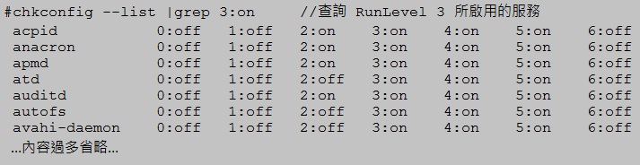
▲圖2 查詢 RunLevel 3 所啟用的服務
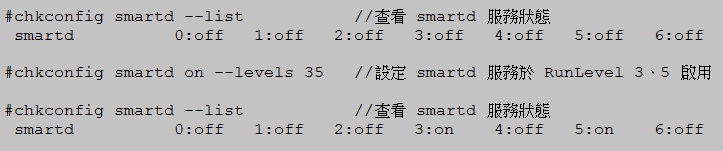
▲圖3 設定 smartd 服務於 RunLevel 3、5 啟用並查看狀態
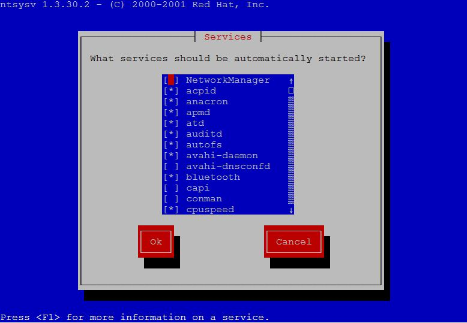
▲圖4 ntsysv 互動設定視窗
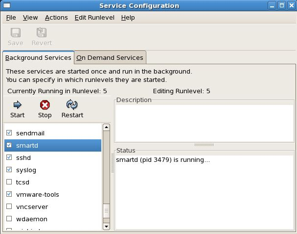
▲圖5 system-config-services 圖形管理介面
常常會有 Linux 初學者詢問，若希望有程式或動作想要在系統開機時，如何自動啟動某些服務或執行某個動作，那該如何達成呢？您可以將相關執行動作寫入至 /etc/rc.local 設定檔內即可。或許您會有疑問為何寫入此檔案的內容會在開機時自動執行，您可以查看 RunLevel 3、5 的執行資料夾裡面有 S99local 的連結檔案，其內容便是連結指向至 /etc/rc.local 檔案，而在 RunLevel 資料夾中 S 開頭表示啟動 (Satrted) 而 K 表示關閉 (Killed)，而數字 99 為啟動順序（數字愈小愈先啟動），這也就是為何寫入 /etc/rc.local 檔案中的內容會在開機時被執行的原因。
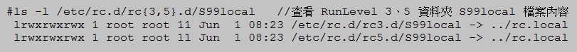
▲圖6 查看 RunLevel 3、5 資料夾 S99local 檔案內容
設定 tcsh Shell 操作環境
對於許多 Linux 的使用者來說習慣的 Shell 應該是系統預設使用的 bash (Bourne-Again Shell)，CentOS 預設支援的 Shell 除了有 bash 之外還支援 sh (Bourne Shell)、csh (C Shell)、tcsh (TENEX C Shell)、ksh (Korn Shell) 等 Shell。筆者個人習慣於 tcsh Shell 操作環境來管理機器，基本上使用哪種 Shell 全憑個人使用習慣也就是順手即可。下列的相關設定值及環境參數將以筆者習慣的 tcsh Shell 來進行舉例說明。
使用 tcsh Shell 在不設定任何參數的情況下，便可以擁有按下【Tab】鍵，即自動補齊檔名及搜尋上一次輸入指令的功能。所謂【Tab】鍵補齊檔名功能是什麼意思呢？舉個例子來說，假如我們想要查看主機的日期及時間資訊時，會鍵入 date 指令，當輸入 da 之後便按下【Tab】鍵，此時作業系統會尋找系統中 da 開頭的相關指令，由於系統中 da 開頭的指令只有二個分別是 date 及 dateconfig。因此當按下【Tab】鍵進行補齊檔名功能時便會先自動補齊為 date 指令。
tcsh Shell 的補齊檔名功能不僅僅能使用於指令方面，對於檔案及目錄也具有相同的功能。以搜尋上一次輸入指令的功能為例，分別輸入了 ls 某個目錄內容及 cd 到某個目錄內，當您想要再次執行時只要打 ls 再按【上方向鍵】則 tcsh Shell 會自動找出最近執行過開頭為 ls 的指令，這樣的功能對於操作作業系統來說非常方便。
除了預設的功能之外我們可以設定 tcsh Shell 的環境變數來加強操作的便利性，以剛才測試補齊檔名功能執行的 date 指令來說，其實該指令的完整路徑為 /bin/date，但是為何當我們輸入 date 指令按下 Enter 鍵後便可順利執行該指令？這是因為預設的 tcsh Shell 環境設定檔中已經將作業系統經常會使用到的指令路徑載入環境變數中（參數 PATH），因此我們才可以在不用鍵入絕對路徑的情況下直接執行相關指令。
以使用 tcsh Shell 為例當使用者登入 CentOS 主機後，該使用者帳號會依序載入 /etc 資料夾下的二個通用環境設定檔，分別是 csh.cshrc 及 csh.login，接著則是載入個人家目錄下的 .cshrc 及 .login 個人環境設定檔。而當管理者設定的通用環境設定檔與個人環境設定檔內容發生衝突時系統會以套用個人環境設定檔為最後結果（最後套用的設定值為準）。再設定以前先確定該使用者帳號所使用的 Shell 您的 Shell 環境設定檔才能正確進行套用，以下為筆者個人習慣設定於個人家目錄下 .cshrc 的個人環境設定檔內容：
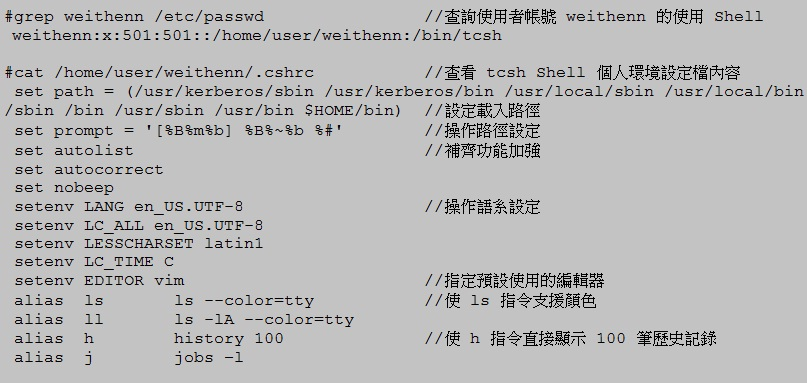
▲圖7 查詢使用者帳號所使用的 Shell 及 tcsh Shell 個人環境設定檔內容
設定 VIM 編輯器操作環境
VI (Visual Interface) 為 Unix-Like 預設內建的檔案編輯器，然而此編輯器對於 Linux 初學者來說比較容易感覺到使用不易。CentOS 作業系統預設會安裝較容易使用而且功能更為強大的檔案編輯器 VIM (Vi Imitation) ，建議 Linux 初學者可以使用此編輯器進行檔案編修，相信可以較為順手。與 tcsh Shell 相同的觀念，VIM 檔案編輯器預設功能雖然已經很強大，但是您仍可以依需求加上相關參數設定使得 VIM 編輯器更為強大更為貼近您的使用需求。以下為筆者個人習慣設定的 VIM 參數設定值：
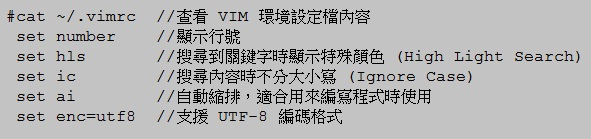
▲圖8 VIM 環境設定檔內容
設定 sudo 帳號管理機制
在 CentOS 作業系統當中 root 使用者帳號被稱為超級使用者帳號，此帳號為整個作業系統中權限最大的管理帳號，權限大到可以直接將作業系統自我毀滅。由於 root 超級使用者帳號權限如此之大，因此筆者在此強烈建議您應該使用一般使用者帳號登入主機進行操作，待需要執行的動作需要提升權限時才切換為管理帳號進行操作，以免因為一時疏忽或者不慎手誤，造成系統或服務損壞。
當您所管理的 CentOS 主機同時擁有多個管理者進行管理時，您該如何確定是其中哪個管理者使用了 root 管理帳號對系統做了什麼事情？例如當您想要得知是哪個管理者在哪個時間切換為 root 管理帳號並且對系統執行了哪些指令，傳統的切換方式 su – 就不符合這樣的需求了，有鑑於此我們可以透過設定 sudo 來達成這樣的查核需求。
Sudo 套件就是為了彌補作業系統中內建的身份切換指令 su 不足所發展出來的軟體套件，透過設定此套件後我們可以建立相關的使用者權限群組，並且給予不同權限的指令來達到控管使用者權限的目的，同時配合相關參數設定我們可以隨時查閱哪位使用者執行過 sudo 指令來提升權限，並且能查出該使用者對於系統在權限提升之後執行了哪些動作，以便進行事後的追查。
首先請先使用 rpm 及 which 指令來查詢系統中是否已經安裝 sudo 套件（預設情況下會安裝此套件）以及相關指令是否存在，確認目前系統中有安裝此套件時請接著使用 visudo 指令來修改 sudo 設定檔內容。建議您不要使用 VI 或 VIM 編輯器來修改 sudo 設定檔，原因除了 visudo 指令會自行尋找 sudo 設定檔 (/etc/sudoers) 並且進入編輯模式之外，當我們修改完成後若設定檔內容中有發生語法或斷行等錯誤時，系統會在顯示警告訊息提醒我們哪裡發生語法錯誤。
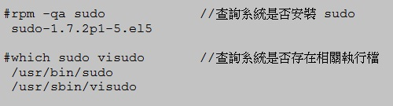
▲圖9 查詢系統是否安裝 sudo 套件及相關指令
在此次實作中我們會修改 sudo 設定檔內容為將 wheel 群組那行的註解符號拿掉，並且加上 Log 記錄檔的內容 (/var/log/sudo.log)，當此 sudo 設定檔設定完畢後，後續只要有人執行 sudo 指令提升權限至管理者身份時便會觸發到剛才設定檔中的 Log 設定，此時系統會自動產生 Log 檔案並將相關資訊寫入其中。相關操作如下所示：
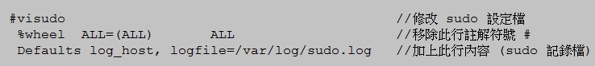
▲圖10 修改 sudo 設定檔內容及加上查核記錄設定
上述 sudo 設定檔內容中表示只要屬於 wheel 群組內的使用者帳號，便可以使用 sudo 指令來暫時提升權限為管理者帳號進行操作。當使用者第一次執行 sudo 指令時系統會再次詢問該使用者密碼，當成功通過密碼驗證 (Authentication) 之後便會暫時切換授權 (Authorization) 身份為管理者帳號 root 來執行其指令，並且在 5 分鐘之內若該使用者再次執行 sudo 指令時，系統便不會再次詢問使用者密碼。
接下來我們著手來測試剛才設定的 sudo 記錄檔機制是否正常運作，請您另外開啟一個 SSH Client 視窗並使用一般使用者帳號遠端登入 CentOS 主機。例如使用 weithenn 這個一般使用者帳號（請確定該使用者帳號已加入 wheel 群組）登入系統並嘗試執行 vipw 指令試圖修改使用者帳號設定檔內容，相信會得到權限被拒絕 (Permission denied) 的錯誤訊息回應。此時您可以使用 sudo 指令搭配剛才的 vipw 指令再次執行即可修改使用者帳號設定檔內容。
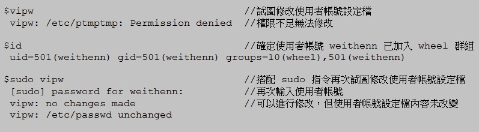
▲圖11 配合 sudo 指令修改使用者帳號設定檔
當上述指令執行完畢後您可以接著查看 sudo 記錄檔便會看到相關的記錄內容，從 sudo 記錄檔內容中我們可以確定 sudo 記錄檔機制目前正確運作中。從 sudo 記錄檔中可以清楚得知是在什麼時間點 (Jun 7 17:30:22)、哪個系統使用者帳號 (weithenn)、在哪一台主機上 (centos5)、從遠端登入此台主機 (pts/3)、在系統中哪個路徑 (/home/user/weithenn)、切換成什麼身份 (root)、執行什麼指令 (/usr/sbin/vipw)。
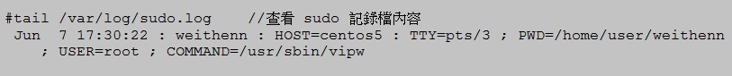
▲圖12 查看 sudo 記錄檔內容
確定 sudo 指令及記錄檔均正確運作後筆者習慣將 root 管理者帳號的密碼給封鎖起來，因此屆時這台主機的管理者們進行主機管理時，便會習慣使用自己的一般使用者帳號登入並配合 sudo 指令，在需要的時候才提升為管理者權限進行管理，不致一登入主機後便習慣使用 su – 來切換成為 root 管理者帳號逃避查核機制。要封鎖 root 管理者密碼請先將權限提升為 root 後，執行 vipw 指令修改 /etc/shadow 檔案，將第二個欄位（密碼欄位）內容修改為 * 即可。
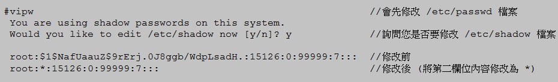
▲圖13 封鎖 root 管理者帳號的密碼
YUM 套件管理工具
絕大部份的開放原始碼軟體皆採用 Tarball 的形式進行發布，而在 Linux 上為了解決使用 Tarball 必須要解壓縮、檢測 (./configure)、編譯 (make)、安裝 (make install) 等繁鎖步驟，因此發展出 RPM (The RPM Package Manager) 來簡化整個安裝流程。雖然 RPM 安裝機制簡化了整個安裝流程但卻無法解決套件相依性及套件相衝突的問題，舉例來說您可能安裝 A RPM 時系統顯示您必須要先安裝 B RPM（套件相依性），而當您下載及安裝 B RPM 時又說需要安裝 C RPM（套件相依性），當您好不容易又下載及安裝 C RPM 時卻出現此 RPM 跟 A RPM 互相衝突，碰到這種情況時在以往您只能手動排除這種套件衝突的狀況了。
YUM (Yellow dog Updater Modified) 套件管理工具便是解決上述 RPM 套件相依性及相衝突的問題而發展出來的套件管理解決方案。此套件管理工具能從指定的套件伺服器上自動下載相對應的 RPM 套件包至系統進行安裝，並且當出現套件相依性時能自動下載及安裝相關聯的 RPM 套件，同時會盡量避免發生套件衝突的情況。YUM 能夠有效簡化軟體套件安裝流程並解決惱人的套件相依性及相衝突的問題，使得軟體套件在安裝、移除、升級程序上變得非常容易。
預設 YUM 下載套件的來源伺服器為國外網站，我們可以透過修改 YUM 設定檔 (/etc/yum.repos.d/CentOS-Base.repo) 將下載套件的鏡像網站指定至台灣境內各所大學或機構。目前台灣可以使用的鏡像網站約有 8 個（如下所示），請您依個人網路狀況選擇較適合您的網路環境進行設定以便加快套件下載速度，或者參考 CentOS 鏡像網站清單選擇位於您國家內的鏡像網站：
* 元智大學：https://ftp.cse.yzu.edu.tw/pub/CentOS/
* 靜宜大學：https://ftp.cs.pu.edu.tw/Linux/CentOS/
* 中山大學：https://ftp.nsysu.edu.tw/CentOS/
* 義守大學：https://ftp.isu.edu.tw/pub/Linux/CentOS/
* 樹德科技大學：https://ftp.stu.edu.tw/Linux/CentOS/
* 台中縣教網中心：https://ftp.tcc.edu.tw/Linux/CentOS/
* Hinet IDC：https://mirror01.idc.hinet.net/CentOS/
* 國家高速網路與計算中心：https://ftp.twaren.net/Linux/CentOS/
下列操作步驟為將 YUM 設定檔中鏡像網站由預設的國外修改為國內的元智大學：
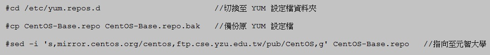
▲圖14 修改 YUM 設定檔指向至國內的元智大學
上述設定完成後您便可以開始使用 YUM 配合相關指令管理套件，但是在開始以前筆者建議您先手動更新 CentOS 的主機時間，以免後續管理相關套件時因為本機系統時間與 YUM 鏡像網站時間差異過大造成不可預期的錯誤。在後續文章中會說明如何設定 CentOS 主機自動與網際網路上的主機定時校對系統時間。
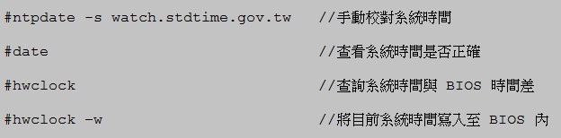
▲圖15 與網際網路 NTP 時間伺服器進行時間同步並同步至 BIOS 內
下列條列出使用 YUM 套件管理工具時常常會使用到的指令及相關參數意義：
* yum check-update：套件更新檢查，將目前系統上安裝的套件與 YUM 鏡像網站進行檢查比對後列出需要更新套件的清單。
* yum update：套件更新，檢查及比對系統需要套件更新的清單後詢問您是否要更新套件，您可以配合參數 –y 對所有詢問一律回答 yes 來允許所有套件更新。
* yum install ＜套件名稱＞：安裝套件，執行從 YUM 鏡像網站下載指定套件並進行安裝，收集相關資訊後會詢問您是否確定要安裝，您可以配合參數 –y 對所有詢問一律回答 yes 來安裝指定套件及其相依性套件。
* yum remove ＜套件名稱＞：移除套件，移除您指定的套件名稱，收集相關資訊後會詢問您是否確定要移除該套件，您可以配合參數 –y 對所有詢問一律回答 yes 來移除指定的套件及相依性套件。
* yum clean all：清除暫存資料，清除使用 YUM 套件管理工具下載 RPM 進行安裝時的暫存檔案。
* yum search ＜套件名稱或關鍵字＞：搜尋套件，您可使用已經知道的套件名稱或者有關於套件的關鍵字來進行搜尋的動作。
* yum list：顯示可安裝套件清單，顯示您指定的 YUM 鏡像網站中所支援安裝的所有套件名稱。
* yum info ＜套件名稱＞：套件資訊，顯示您指定的套件其詳細資訊，例如適用平台、套件版本、套件大小、套件功能描述、套件授權資訊、套件官方網址等資訊。
* yum grouplist：顯示可安裝的套件群組清單，顯示您指定的 YUM 鏡像網站中所支援安裝的所有套件群組名稱。
* yum groupinstall ＜套件群組名稱＞：安裝套件群組，執行從 YUM 鏡像網站下載指定套件群組中相關套件並進行安裝，收集套件群組相關資訊後會詢問您是否確定要安裝，您可以配合參數 –y對所有詢問一律回答 yes 來安裝指定套件及其相依性套件。
* yum groupremove ＜套件群組名稱＞：移除套件群組，移除您指定的套件群組，並且在系統收集相關資訊後，會詢問是否確定要移除該套件群組中所有套件，您可以配合參數 –y 對所有詢問一律回答 yes 來移除指定的套件群組。
* yum groupinfo ＜套件群組名稱＞：查詢套件群組資訊，查詢指定的套件群組資訊及功能描述，並且將顯示此套件群組中預設會安裝的套件清單 (Default Packages)、強制安裝的套件清單 (Mandatory Packages)、選擇安裝的套件清單 (Optional Packages)。
由於 YUM 套件管理工具實際上也是幫助我們對 RPM 套件包進行管理的工作，其實底層的安裝、移除、升級等動作仍是使用 RPM 套件，因此我們仍可以使用 rpm 指令來幫助我們了解及管理套件，例如我們使用 YUM 套件管理工具為 CentOS 主機安裝 VNC Server 套件後我們可以使用 rpm 指令來了解剛才安裝的 VNC Server 套件、設定檔及服務啟動檔在哪裡。
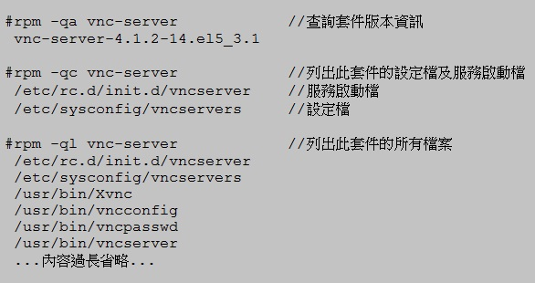
▲圖16 利用 rpm 指令查詢套件版本、設定檔、服務啟動檔
結語
本文首先討論 RunLevel 啟動模式等級使讀者可以概略了解一下整個 CentOS 開機過程，相信對於後續的主機管理是有幫助的，接著說明及設定使用者登入 CentOS 主機後第一件事 Shell，筆者以設定 tcsh Shell 為例進行實作，將 Shell 環境設定好相信對於管理主機上會更加得心應手。再來則是設定 VIM 檔案編輯器設定讓您日後編輯相關設定檔更加順手。
接著我們討論到利用 sudo 套件來限制及記錄管理者所做的操作，像是誰透過 sudo 指令把權限提升為 root 管理者帳號，並且對 CentOS 主機在什麼時間點執行了什麼指令或動作，以便後續的稽核動作得以執行。並且將 root 管理者密碼封鎖以避免有管理者貪一時之便直接使用 su – 指令轉換為 root 管理者帳號權限，最後則是說明如何將 YUM 套件管理工具的套件下載鏡像網站由預設值的國外修改為國內鏡像網站以便節省套件下載時間，同時也說明常用的 yum 及 rpm 指令及其說明。
在下一篇文章中也就是 CentOS 基礎設定的最後一篇我們將會討論，當主機上線運作如何定期將系統的相關記錄例如安全性記錄、磁碟空間使用狀況、登入資訊等定期寄送給管理人員，以及探討如何對遠端登入服務 SSH 做基本的安全性設定，還有主機該如何定時自動與網際網路上的時間伺服器進行時間校對。最後則是了解系統啟動哪些服務、開啟哪些相對應的 Port 以及關閉系統上不必要的服務，最後則是安裝 RPMforge 來增加可安裝的套件數量。
You may be interested in the following articles:
- CentOS 基礎設定（下） - 2011-07-20
- CentOS 基礎設定（上） - 2011-06-25
Special


Address：No.128, Sec.2, Academia Rd., Institute of Information Science, Academia Sinica, Nangang District, Taipei City 11529, Taiwan (R.O.C).
Privacy Policy. Terms-of-use